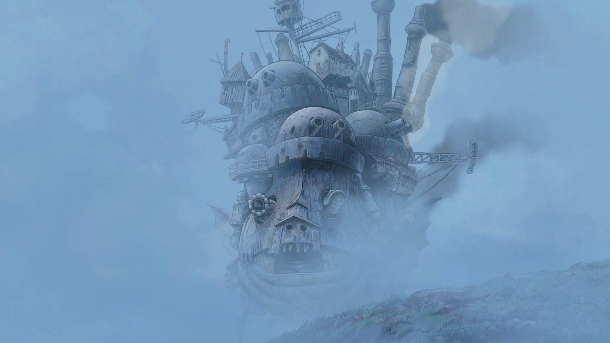

Uma bruxa lança uma terrível maldição sobre a jovem Sophie, transformando-a numa velha de 90 anos. Desesperada, ela embarca numa odisseia na qual acaba parando no castelo animado, onde reside um misterioso feiticeiro chamado Howl que poderá ajudá-la a reverter o feitiço.

Chihiro e seus pais estão se mudando para uma cidade diferente. A caminho da nova casa, o pai decide pegar um atalho. Eles se deparam com uma mesa repleta de comida, embora ninguém esteja por perto. Chihiro sente o perigo, mas seus pais começam a comer. Quando anoitece, eles se transformam em porcos. Agora, apenas Chihiro pode salvá-los.

Arrietty e sua família são seres pequenos, moram sob uma casa antiga e sobrevivem roubando itens da casa dos humanos e colocando a culpa em gatos e ratos. Quando o jovem Shawn se hospeda na casa, fica amigo de Arrietty, colocando o segredo em risco.